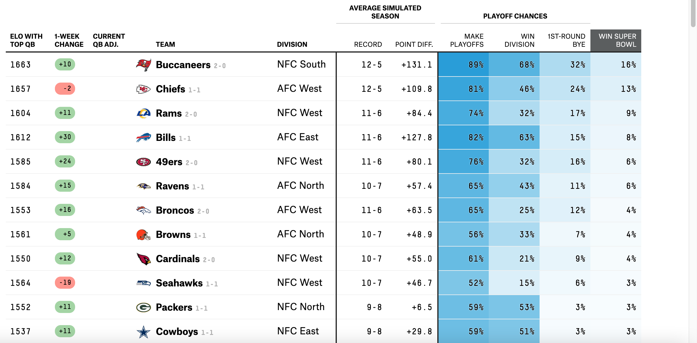
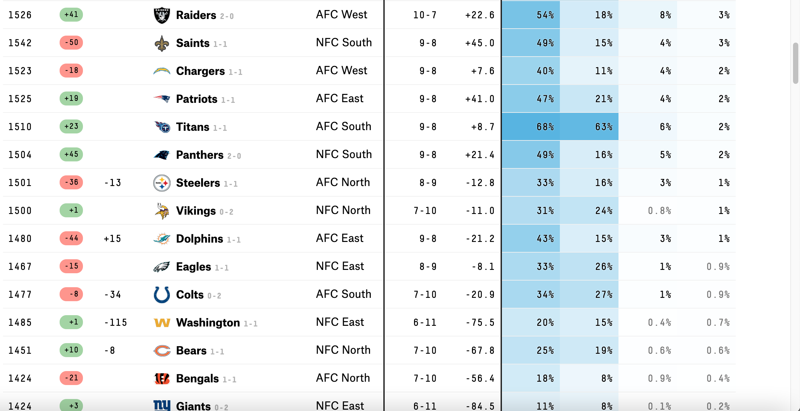
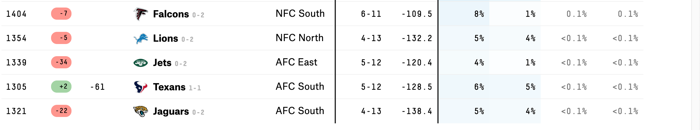
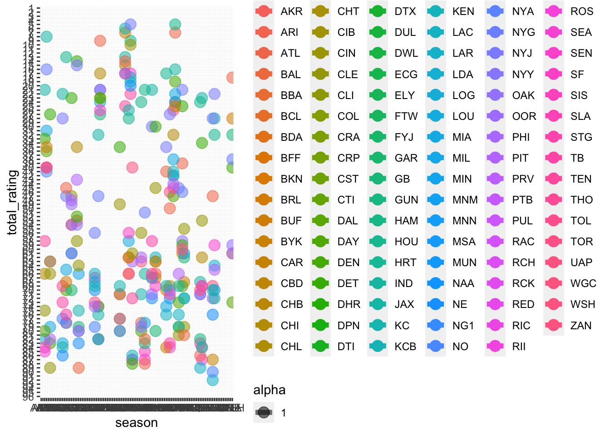

The goal of this exercise is to replicate a more complicated visual chart as accurately as possible.
The link to this data can be found at the hyperlink here:
#https://projects.fivethirtyeight.com/2021-nfl-predictions/
The Original Chart is shown here:
   To replicate the chart, first we will need to load the R packages needed:
library(tidyverse) #To help manage data## ── Attaching packages ─────────────────────────────────────── tidyverse 1.3.1 ──## ✓ ggplot2 3.3.5 ✓ purrr 0.3.4
## ✓ tibble 3.1.4 ✓ dplyr 1.0.7
## ✓ tidyr 1.1.3 ✓ stringr 1.4.0
## ✓ readr 2.0.1 ✓ forcats 0.5.1## ── Conflicts ────────────────────────────────────────── tidyverse_conflicts() ──
## x dplyr::filter() masks stats::filter()
## x dplyr::lag() masks stats::lag()library(dplyr) #to help with creating chartsNow we will load the data for examination:
NFL_Stats_Location <- here::here('Data', 'nfl-elo', 'nfl_elo.csv' )
#We will now load the data:
NFL_Stats <- read_csv(NFL_Stats_Location)## Rows: 17082 Columns: 33## ── Column specification ────────────────────────────────────────────────────────
## Delimiter: ","
## chr (5): playoff, team1, team2, qb1, qb2
## dbl (27): season, neutral, elo1_pre, elo2_pre, elo_prob1, elo_prob2, elo1_p...
## date (1): date##
## ℹ Use `spec()` to retrieve the full column specification for this data.
## ℹ Specify the column types or set `show_col_types = FALSE` to quiet this message.We will now look at the ‘structure’ of the data, and create a ‘summary’:
str(NFL_Stats)## spec_tbl_df [17,082 × 33] (S3: spec_tbl_df/tbl_df/tbl/data.frame)
## $ date : Date[1:17082], format: "1920-09-26" "1920-10-03" ...
## $ season : num [1:17082] 1920 1920 1920 1920 1920 1920 1920 1920 1920 1920 ...
## $ neutral : num [1:17082] 0 0 0 0 0 0 0 0 0 0 ...
## $ playoff : chr [1:17082] NA NA NA NA ...
## $ team1 : chr [1:17082] "RII" "RII" "CHI" "CBD" ...
## $ team2 : chr [1:17082] "STP" "MUN" "MUT" "PTQ" ...
## $ elo1_pre : num [1:17082] 1504 1516 1368 1505 1478 ...
## $ elo2_pre : num [1:17082] 1300 1478 1300 1300 1300 ...
## $ elo_prob1 : num [1:17082] 0.825 0.644 0.683 0.825 0.802 ...
## $ elo_prob2 : num [1:17082] 0.175 0.356 0.317 0.175 0.198 ...
## $ elo1_post : num [1:17082] 1516 1542 1387 1517 1490 ...
## $ elo2_post : num [1:17082] 1288 1452 1282 1288 1288 ...
## $ qbelo1_pre : num [1:17082] NA NA NA NA NA NA NA NA NA NA ...
## $ qbelo2_pre : num [1:17082] NA NA NA NA NA NA NA NA NA NA ...
## $ qb1 : chr [1:17082] NA NA NA NA ...
## $ qb2 : chr [1:17082] NA NA NA NA ...
## $ qb1_value_pre : num [1:17082] NA NA NA NA NA NA NA NA NA NA ...
## $ qb2_value_pre : num [1:17082] NA NA NA NA NA NA NA NA NA NA ...
## $ qb1_adj : num [1:17082] NA NA NA NA NA NA NA NA NA NA ...
## $ qb2_adj : num [1:17082] NA NA NA NA NA NA NA NA NA NA ...
## $ qbelo_prob1 : num [1:17082] NA NA NA NA NA NA NA NA NA NA ...
## $ qbelo_prob2 : num [1:17082] NA NA NA NA NA NA NA NA NA NA ...
## $ qb1_game_value: num [1:17082] NA NA NA NA NA NA NA NA NA NA ...
## $ qb2_game_value: num [1:17082] NA NA NA NA NA NA NA NA NA NA ...
## $ qb1_value_post: num [1:17082] NA NA NA NA NA NA NA NA NA NA ...
## $ qb2_value_post: num [1:17082] NA NA NA NA NA NA NA NA NA NA ...
## $ qbelo1_post : num [1:17082] NA NA NA NA NA NA NA NA NA NA ...
## $ qbelo2_post : num [1:17082] NA NA NA NA NA NA NA NA NA NA ...
## $ score1 : num [1:17082] 48 45 20 48 32 43 14 10 51 42 ...
## $ score2 : num [1:17082] 0 0 0 0 6 0 0 0 0 0 ...
## $ quality : num [1:17082] NA NA NA NA NA NA NA NA NA NA ...
## $ importance : num [1:17082] NA NA NA NA NA NA NA NA NA NA ...
## $ total_rating : num [1:17082] NA NA NA NA NA NA NA NA NA NA ...
## - attr(*, "spec")=
## .. cols(
## .. date = col_date(format = ""),
## .. season = col_double(),
## .. neutral = col_double(),
## .. playoff = col_character(),
## .. team1 = col_character(),
## .. team2 = col_character(),
## .. elo1_pre = col_double(),
## .. elo2_pre = col_double(),
## .. elo_prob1 = col_double(),
## .. elo_prob2 = col_double(),
## .. elo1_post = col_double(),
## .. elo2_post = col_double(),
## .. qbelo1_pre = col_double(),
## .. qbelo2_pre = col_double(),
## .. qb1 = col_character(),
## .. qb2 = col_character(),
## .. qb1_value_pre = col_double(),
## .. qb2_value_pre = col_double(),
## .. qb1_adj = col_double(),
## .. qb2_adj = col_double(),
## .. qbelo_prob1 = col_double(),
## .. qbelo_prob2 = col_double(),
## .. qb1_game_value = col_double(),
## .. qb2_game_value = col_double(),
## .. qb1_value_post = col_double(),
## .. qb2_value_post = col_double(),
## .. qbelo1_post = col_double(),
## .. qbelo2_post = col_double(),
## .. score1 = col_double(),
## .. score2 = col_double(),
## .. quality = col_double(),
## .. importance = col_double(),
## .. total_rating = col_double()
## .. )
## - attr(*, "problems")=<externalptr>summary(NFL_Stats)## date season neutral playoff
## Min. :1920-09-26 Min. :1920 Min. :0.000000 Length:17082
## 1st Qu.:1968-11-03 1st Qu.:1968 1st Qu.:0.000000 Class :character
## Median :1988-12-31 Median :1988 Median :0.000000 Mode :character
## Mean :1985-01-21 Mean :1984 Mean :0.005561
## 3rd Qu.:2006-09-10 3rd Qu.:2006 3rd Qu.:0.000000
## Max. :2022-01-09 Max. :2021 Max. :1.000000
##
## team1 team2 elo1_pre elo2_pre
## Length:17082 Length:17082 Min. :1120 Min. :1157
## Class :character Class :character 1st Qu.:1430 1st Qu.:1427
## Mode :character Mode :character Median :1505 Median :1501
## Mean :1503 Mean :1499
## 3rd Qu.:1578 3rd Qu.:1576
## Max. :1840 Max. :1849
##
## elo_prob1 elo_prob2 elo1_post elo2_post
## Min. :0.07095 Min. :0.02948 Min. :1120 Min. :1154
## 1st Qu.:0.46136 1st Qu.:0.28071 1st Qu.:1427 1st Qu.:1424
## Median :0.59655 Median :0.40345 Median :1504 Median :1501
## Mean :0.58488 Mean :0.41512 Mean :1503 Mean :1499
## 3rd Qu.:0.71929 3rd Qu.:0.53864 3rd Qu.:1581 3rd Qu.:1577
## Max. :0.97052 Max. :0.92905 Max. :1849 Max. :1831
## NA's :240 NA's :240
## qbelo1_pre qbelo2_pre qb1 qb2
## Min. :1150 Min. :1152 Length:17082 Length:17082
## 1st Qu.:1434 1st Qu.:1434 Class :character Class :character
## Median :1506 Median :1504 Mode :character Mode :character
## Mean :1504 Mean :1503
## 3rd Qu.:1575 3rd Qu.:1575
## Max. :1806 Max. :1814
## NA's :2402 NA's :2402
## qb1_value_pre qb2_value_pre qb1_adj qb2_adj
## Min. :-53.78 Min. :-47.29 Min. :-242.488 Min. :-218.569
## 1st Qu.: 53.71 1st Qu.: 54.40 1st Qu.: -8.280 1st Qu.: -8.065
## Median : 90.68 Median : 90.85 Median : 2.013 Median : 2.155
## Mean : 96.16 Mean : 96.16 Mean : -1.285 Mean : -1.296
## 3rd Qu.:132.48 3rd Qu.:131.74 3rd Qu.: 12.014 3rd Qu.: 11.977
## Max. :329.56 Max. :327.72 Max. : 107.686 Max. : 107.088
## NA's :2162 NA's :2162 NA's :2162 NA's :2162
## qbelo_prob1 qbelo_prob2 qb1_game_value qb2_game_value
## Min. :0.0598 Min. :0.0328 Min. :-385.74 Min. :-413.972
## 1st Qu.:0.4469 1st Qu.:0.2866 1st Qu.: 14.75 1st Qu.: -6.058
## Median :0.5864 Median :0.4136 Median : 105.13 Median : 83.088
## Mean :0.5750 Mean :0.4250 Mean : 108.05 Mean : 87.477
## 3rd Qu.:0.7134 3rd Qu.:0.5531 3rd Qu.: 198.91 3rd Qu.: 175.837
## Max. :0.9672 Max. :0.9402 Max. : 713.70 Max. : 605.098
## NA's :2162 NA's :2162 NA's :2402 NA's :2402
## qb1_value_post qb2_value_post qbelo1_post qbelo2_post
## Min. :-46.33 Min. :-53.78 Min. :1164 Min. :1150
## 1st Qu.: 53.96 1st Qu.: 52.42 1st Qu.:1432 1st Qu.:1432
## Median : 90.66 Median : 88.89 Median :1505 Median :1505
## Mean : 96.24 Mean : 94.20 Mean :1504 Mean :1503
## 3rd Qu.:132.01 3rd Qu.:130.15 3rd Qu.:1578 3rd Qu.:1575
## Max. :327.72 Max. :329.56 Max. :1814 Max. :1806
## NA's :2402 NA's :2402 NA's :2402 NA's :2402
## score1 score2 quality importance
## Min. : 0.00 Min. : 0.00 Min. : 0.00 Min. : 6.00
## 1st Qu.:14.00 1st Qu.:10.00 1st Qu.: 22.00 1st Qu.:43.75
## Median :21.00 Median :17.00 Median : 48.00 Median :65.50
## Mean :21.62 Mean :18.75 Mean : 47.99 Mean :61.46
## 3rd Qu.:28.00 3rd Qu.:26.00 3rd Qu.: 73.00 3rd Qu.:84.00
## Max. :72.00 Max. :73.00 Max. :100.00 Max. :98.00
## NA's :240 NA's :240 NA's :2162 NA's :16810
## total_rating
## Min. : 5.00
## 1st Qu.:33.75
## Median :62.00
## Mean :55.19
## 3rd Qu.:74.00
## Max. :92.00
## NA's :16810Next we will ‘attach’ the data so that we can manage it directly with the names of the variables used, which makes data manipulation easier
We will follow this up with the ‘head’ command which shows the first rows of the data to easily view how the data is ebing displayed:
attach(NFL_Stats)
head(NFL_Stats)## # A tibble: 6 × 33
## date season neutral playoff team1 team2 elo1_pre elo2_pre elo_prob1
## <date> <dbl> <dbl> <chr> <chr> <chr> <dbl> <dbl> <dbl>
## 1 1920-09-26 1920 0 <NA> RII STP 1504. 1300 0.825
## 2 1920-10-03 1920 0 <NA> RII MUN 1516. 1478. 0.644
## 3 1920-10-03 1920 0 <NA> CHI MUT 1368. 1300 0.683
## 4 1920-10-03 1920 0 <NA> CBD PTQ 1505. 1300 0.825
## 5 1920-10-03 1920 0 <NA> BFF WBU 1478. 1300 0.802
## 6 1920-10-03 1920 0 <NA> AKR WHE 1503. 1300 0.824
## # … with 24 more variables: elo_prob2 <dbl>, elo1_post <dbl>, elo2_post <dbl>,
## # qbelo1_pre <dbl>, qbelo2_pre <dbl>, qb1 <chr>, qb2 <chr>,
## # qb1_value_pre <dbl>, qb2_value_pre <dbl>, qb1_adj <dbl>, qb2_adj <dbl>,
## # qbelo_prob1 <dbl>, qbelo_prob2 <dbl>, qb1_game_value <dbl>,
## # qb2_game_value <dbl>, qb1_value_post <dbl>, qb2_value_post <dbl>,
## # qbelo1_post <dbl>, qbelo2_post <dbl>, score1 <dbl>, score2 <dbl>,
## # quality <dbl>, importance <dbl>, total_rating <dbl>#Now we will construct a graph to help illustrate the data visually, and then convert that data in a way that it resembles the original graph:
ggplot(NFL_Stats,aes(x = season, y = total_rating, group = team1, team2)) +
geom_line(aes(color = team1, team2, alpha = 1), size = 2)+
geom_point(aes(color = team1, team2, alpha = 1), size = 4) +
scale_y_reverse(breaks = 1:nrow(NFL_Stats))## Warning: Removed 3914 row(s) containing missing values (geom_path).## Warning: Removed 16810 rows containing missing values (geom_point). As you can see from our graph, there is so much data that it is congesting the axis, currently, I am not aware of how to eliminate the axis congestion with this many variables, as well as converting the data into a ranked word based list. I will need further study to understand how one would do this.